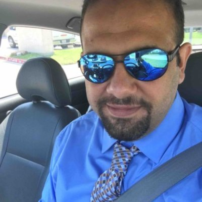

About Me

Hello World! My name is Ali, a computer engineer, technology enthusiast, googling guru and computer geek. Currently going through career path transition by attending a coding bootcamp powered by university of Texas and also other online courses. I'm planning on combining my new skills ,supported by my motivations and passion for coding, with other transferable proven skills that I gained and mastered through a very successful 4 years of working as a wireline lead engineer at Schlumberger, The oil services giant, skills that include team leading, creative thinking, proven problem solving skills, adaptability and self-development, and then use this combination in a company that allow me to use it.
Working in a challenging environment is where I show my best, there I can leave an impact and a fingerprint. This is why I chose the fields I worked in during my career.
Thinking out of the box and being creative is my approach when I work on any project, work or personal, and always try to challenge myself to find new solutions instead of searching and using existing ones, and this is the reason of my passion for coding, it's evolving everyday and has no limits when it comes to new ideas.
In 5 years I see myself pursuing a masters degree in graphic design, as a step towards becoming an established web designer/developer.